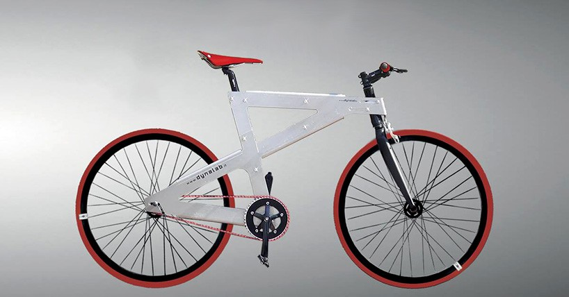
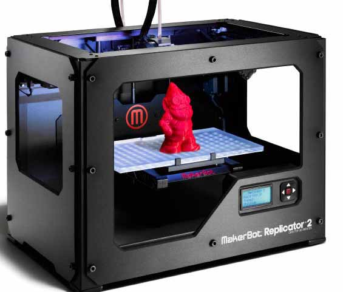

Open Source
18/10/16

Il 18 ottobre la nostra classe si e' recata all'Impact Hub di reggio emilia per parlare di open source ed industria 4.0
L'open source e' un modo diverso per vedere l'economia, dove ogni risorsa e' usufruibile da tutto e tutti. In informatica indica un software di cui gli autori rendono pubblici il codice sorgente del programma, un esempio e' il kernel di linux.
Industria 4.0
Con industria 4.0 si indica una tendenza all’automazione industriale che integra alcune nuove tecnologie produttive per migliorare le condizioni di lavoro e aumentare la produttività e la qualità produttiva degli impianti.
Un esempio di nuove tecnologie e' NoBike, realizzato dai ragazzi di impacHub, consiste in biciclette realizzate in lamine di metallo e totalmente riassemblabile
 Stampante 3D
Un derivato del paradigma dell'industra 4.0 e' la stampante 3D, dove tramite un modello 3D realizzato al computer, e' possibile realizzare qualunque modello tridimensionale mediante il processo di produzione additiva dove c'e' il posizionamento di uno strato di materiale desiderato uno sopra l’altro, procedendo per sezioni trasversali